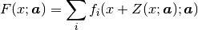

Models¶
From Numerical Recipes, chapter 15.0:
Given a set of observations, one often wants to condense and summarize the data by fitting it to a “model” that depends on adjustable parameters. Sometimes the model is simply a convenient class of functions, such as polynomials or Gaussians, and the fit supplies the appropriate coefficients. Other times, the model’s parameters come from some underlying theory that the data are supposed to satisfy; examples are coefficients of rate equations in a complex network of chemical reactions, or orbital elements of a binary star. Modeling can also be used as a kind of constrained interpolation, where you want to extend a few data points into a continuous function, but with some underlying idea of what that function should look like.
This chapter shows how to construct the model.
Complex models are often a sum of many functions. That is why in Fityk the model F is constructed as a list of component functions and is computed as .
Each component function is one of predefined functions, such as Gaussian or polynomial. This is not a limitation, because the user can add any function to the predefined functions.
To avoid confusion, the name function will be used only when referring to a component function, not when when referring to the sum (model), which mathematically is also a function. The predefined functions will be sometimes called function types.
Function is a function of x, and depends on a vector of parameters . The parameters will be fitted to achieve agreement of the model and data.
In experiments we often have the situation that the measured x values are subject to systematic errors caused, for example, by instrumental zero shift or, in powder diffraction measurements, by displacement of sample in the instrument. If this is the case, such errors should be a part of the model. In Fityk, this part of the model is called x-correction. The final formula for the model is:

where is the x-correction. Z is constructed as a list of components, analogously to F, although in practice it has rarely more than one component.
Each component function is created by specifying a function type and binding variables to type’s parameters. The next section explains what are variables in Fityk, and then we get back to functions.
Variables¶
Variables have names prefixed with the dollar symbol ($) and are created by assigning a value:
$foo=~5.3 # simple-variable
$bar=5*sin($foo) # compound-variable
$c=3.1 # constant (the simplest compound-variable)
The numbers prefixed with the tilde (~) are adjustable when the model
is fitted to the data.
Variable created by assigning ~number
(like $foo in the example above)
will be called a simple-variable.
All other variables are called compound-variables.
Compound variables either depend on other variables ($bar above)
or are constant ($c).
Important
Unlike in popular programming languages, variable can store either a single
numeric (floating-point) value or a mathematical expression. Nothing else.
In case of expression, if we define $b=2*$a
the value of $b will be recalculated every time $a changes.
To assign a value (constant) of another variable, use:
$b={$a}. Braces return the current value of the enclosed expression.
The left brace can be preceded by the tilde (~).
The assignment $b=~{$a} creates a simple variable.
Compound-variables can be build using operators +, -, *, /, ^
and the functions
sqrt,
exp,
log10,
ln,
sin,
cos,
tan,
sinh,
cosh,
tanh,
atan,
asin,
acos,
erf,
erfc,
lgamma,
abs,
voigt.
This is a subset of the functions used in
data transformations.
The braces may contain any data expression:
$x0 = {x[0]}
$min_y = {min(y if a)}
$c = {max2($a, $b)}
$t = {max(x) < 78 ? $a : $b}
Sometimes it is useful to freeze a variable, i.e. to prevent it from changing while fitting:
$a = ~12.3 # $a is fittable (simple-variable)
$a = {$a} # $a is not fittable (constant)
$a = ~{$a} # $a is fittable (simple-variable) again
In the GUI
a variable can be switched between constant and simple-variable
by clicking the padlock button on the sidebar.
The icons  and
show that the variable is fittable and frozen, respectively.
and
show that the variable is fittable and frozen, respectively.
If the assigned expression contains tildes:
$bleh=~9.1*exp(~2)
it automatically creates simple-variables corresponding
to the tilde-prefixed numbers.
In the example above two simple-variables (with values 9.1 and 2) are created.
Automatically created variables are named $_1, $_2, $_3, and so on.
Variables can be deleted using the command:
delete $variable
Domains¶
Simple-variables may have a domain, which is used for two things when fitting.
Most importantly, fitting methods that support bound constraints use the domain as lower and/or upper bounds. See the section Bound Constraints for details.
The other use is for randomizing parameters (simple-variables) of the model. Methods that stochastically initialize or modify parameters (usually generating a set of initial points) need well-defined domains (minimum and maximum values for parameters) to work effectively. Such methods include Nelder-Mead simplex and Genetic Algorithms, but not the default Lev-Mar method, so in most cases you do not need to worry about it.
The syntax is as follows:
$a = ~12.3 [0:20] # initial values are drawn from the (0, 20) range
$a = ~12.3 [0:] # only lower bound
$a = ~12.3 [:20] # only upper bound
$a = ~15.0 # domain stays the same
$a = ~15.0 [] # no domain
$a = ~{$a} [0:20] # domain is set again
If the domain is not specified but it is required (for the latter use)
by the fitting method, we assume it to be ±p% of the current value,
where p can be set using the domain_percent option.
Function Types and Functions¶
Function types have names that start with upper case letter
(Linear, Voigt).
Functions have names prefixed with the percent symbol (%func).
Every function has a type and variables bound to its parameters.
One way to create a function is to specify both type and variables:
%f1 = Gaussian(~66254., ~24.7, ~0.264)
%f2 = Gaussian(~6e4, $ctr, $b+$c)
%f3 = Gaussian(height=~66254., hwhm=~0.264, center=~24.7)
Every expression which is valid on the right-hand side of a variable
assignment can be used as a variable.
If it is not just a name of a variable, an automatic variable is created.
In the above examples, two variables were implicitely created for %f2:
first for value 6e4 and the second for $b+$c).
If the names of function’s parameters are given (like for %f3 above),
the variables can be given in any order.
Function types can can have specified default values for some parameters. The variables for such parameters can be omitted, e.g.:
=-> i Pearson7
Pearson7(height, center, hwhm, shape=2) = height/(1+((x-center)/hwhm)^2*(2^(1/shape)-1))^shape
=-> %f4 = Pearson7(height=~66254., center=~24.7, hwhm=~0.264) # no shape is given
New function %f4 was created.
Functions can be copied. The following command creates a deep copy (i.e. all variables are also duplicated) of %foo:
%bar = copy(%foo)
Functions can be also created with the command guess,
as described in Guessing Initial Parameters.
Variables bound to the function parameters can be changed at any time:
=-> %f = Pearson7(height=~66254., center=~24.7, fwhm=~0.264)
New function %f was created.
=-> %f.center=~24.8
=-> $h = ~66254
=-> %f.height=$h
=-> info %f
%f = Pearson7($h, $_5, $_3, $_4)
=-> $h = ~60000 # variables are kept by name, so this also changes %f
=-> %p1.center = %p2.center + 3 # keep fixed distance between %p1 and %p2
Functions can be deleted using the command:
delete %function
Built-In Functions¶
The list of all functions can be obtained using i types.
Some formulae here have long parameter names
(like “height”, “center” and “hwhm”) replaced with
Gaussian:
here is half width at half maximum (HWHM=FWHM/2, where FWHM stands for full width…), which is proportional to the standard deviation: .
SplitGaussian:
GaussianA:
Lorentzian:
SplitLorentzian:
LorentzianA:
Pearson VII (Pearson7):
split Pearson VII (SplitPearson7):
Pearson VII Area (Pearson7A):
Pseudo-Voigt (PseudoVoigt):
Pseudo-Voigt is a name given to the sum of Gaussian and Lorentzian. parameters in Pearson VII and Pseudo-Voigt are not related.
split Pseudo-Voigt (SplitPseudoVoigt):
Pseudo-Voigt Area (PseudoVoigtA):
Voigt:
The Voigt function is a convolution of Gaussian and Lorentzian functions. = heigth, = center, is proportional to the Gaussian width, and is proportional to the ratio of Lorentzian and Gaussian widths.
Voigt is computed according to R.J.Wells, Rapid approximation to the Voigt/Faddeeva function and its derivatives, Journal of Quantitative Spectroscopy & Radiative Transfer 62 (1999) 29-48. The approximation is very fast, but not very exact.
FWHM is estimated using an approximation called modified Whiting (Olivero and Longbothum, 1977, JQSRT 17, 233): , where .
VoigtA:
split Voigt (SplitVoigt):
Exponentially Modified Gaussian (EMG):
The exponentially modified Gaussian is a convolution of Gaussian and exponential probability density. a = Gaussian heigth, b = location parameter (Gaussian center), c = Gaussian width, d = distortion parameter (a.k.a. modification factor or time constant).
LogNormal:
Doniach-Sunjic (DoniachSunjic):
Polynomial5:
Sigmoid:
FCJAsymm:
Axial asymmetry peak shape in the Finger, Cox and Jephcoat model, see J. Appl. Cryst. (1994) 27, 892 and J. Appl. Cryst. (2013) 46, 1219.
Variadic Functions¶
Variadic function types have variable number of parameters. Two variadic function types are defined:
Spline(x1, y1, x2, y2, ...)
Polyline(x1, y1, x2, y2, ...)
This example:
%f = Spline(22.1, 37.9, 48.1, 17.2, 93.0, 20.7)
creates a function that is a natural cubic spline interpolation through points (22.1, 37.9), (48.1, 17.2), ….
The Polyline function is a polyline interpolation (spline of order 1).
Both Spline and Polyline functions are primarily used
for the manual baseline subtraction via the GUI.
The derivatives of Spline function are not calculated, so this function is not refined by the default, derivative-based fitting algorithm.
Since the Polyline derivatives are calculated, it is possible to perform weighted least squares approximation by broken lines, although non-linear fitting algorithms are not optimal for this task.
User-Defined Functions (UDF)¶
User-defined function types can be added using command define,
and then used in the same way as built-in functions.
Example:
define MyGaussian(height, center, hwhm) = height*exp(-ln(2)*((x-center)/hwhm)^2)
The name of new type must start with an upper-case letter, contain only letters and digits and have at least two characters.
The name of the type is followed by parameters in brackets.
Parameter name must start with lowercase letter and, contain only lowercase letters, digits and the underscore (‘_’).
The name “x” is reserved, do not put it into parameter list, just use it on the right-hand side of the definition.
There are special names of parameters that Fityk understands:
if the functions is peak-like (bell-shaped):
height,center,hwhm,area,if the functions is S-shaped (sigmoidal) or step-like:
lower,upper,xmid,wsig,if the function is more like linear:
slope,intercept,avgy.
The initial values of these parameters can be guessed (command
guess) from the data.hwhmmeans half width at half maximum, the other names are self-explaining.Each parameter may have a default value (see the examples below). The default value can be either a number or an expression that depends on the parameters listed above (e.g.
0.8*hwhm). The default value always binds a simple-variable to the parameter.
UDFs can be defined in a few ways:
by giving a full formula, like in the example above,
as a re-parametrization of existing function (see the
GaussianAreaexample below),as a sum of already defined functions (see the
GLSumexample below),as a split (bifurcated) function:
x <expression?Function1(…):Function2(…) (see theSplitLexample below).
When giving a full formula, the right-hand side of the equality sign is similar to the definiton of variable, but the formula can also depend on x. Hopefully the examples can make the syntax clear:
# this is how some built-in functions could be defined
define MyGaussian(height, center, hwhm) = height*exp(-ln(2)*((x-center)/hwhm)^2)
define MyLorentzian(height, center, hwhm) = height/(1+((x-center)/hwhm)^2)
define MyCubic(a0=height,a1=0, a2=0, a3=0) = a0 + a1*x + a2*x^2 + a3*x^3
# supersonic beam arrival time distribution
define SuBeArTiDi(c, s, v0, dv) = c*(s/x)^3*exp(-(((s/x)-v0)/dv)^2)/x
# area-based Gaussian can be defined as modification of built-in Gaussian
# (it is the same as built-in GaussianA function)
define GaussianArea(area, center, hwhm) = Gaussian(area/hwhm/sqrt(pi/ln(2)), center, hwhm)
# sum of Gaussian and Lorentzian, a.k.a. PseudoVoigt (should be in one line)
define GLSum(height, center, hwhm, shape) = Gaussian(height*(1-shape), center, hwhm)
+ Lorentzian(height*shape, center, hwhm)
# split-Gaussian, the same as built-in SplitGaussian (should be in one line)
define SplitG(height, center, hwhm1=fwhm*0.5, hwhm2=fwhm*0.5) =
x < center ? Lorentzian(height, center, hwhm1)
: Lorentzian(height, center, hwhm2)
There is a simple substitution mechanism that makes writing complicated
functions easier.
Substitutions must be assigned in the same line, after the keyword where.
Example:
define ReadShockley(sigma0=1, a=1) = sigma0 * t * (a - ln(t)) where t=x*pi/180
# more complicated example, with nested substitutions
define FullGBE(k, alpha) = k * alpha * eta * (eta / tanh(eta) - ln (2*sinh(eta))) where eta = 2*pi/alpha * sin(theta/2), theta=x*pi/180
How it works internally
The formula is parsed, derivatives of the formula are calculated symbolically, expressions are simplified and bytecode for virtual machine (VM) is created.
When fitting, the VM calculates the value of the function and derivatives for every point.
Defined functions can be undefined using command undefine:
undefine GaussianArea
It is common to add own definitions to the init file.
See the section Starting fityk and cfityk for details.
Cutoff¶
With default settings, the value of every function is calculated
at every point. Peak functions, such as Gaussian, often have non-negligible
values only in a small fraction of all points,
so if you have many narrow peaks
(like here),
the basic optimization is to calculate values of each peak function
only near the function’s center.
If the option function_cutoff is set to a non-zero value,
each function is evaluated only in the range where its values are
greater than the function_cutoff.
{kind=link}
This optimization is supported only by some built-in functions.
Model, F and Z¶
As already discussed, each dataset has a separate model that can be fitted to the data. As can be seen from the formula at the beginning of this chapter, the model is defined as a set functions and a set of functions . These sets are named F and Z respectively. The model is constructed by specifying names of functions in these two sets.
In many cases x-correction Z is not used. The fitted curve is thus the sum of all functions in F.
Command:
F += %function
adds %function to F, and
Z += %function
adds %function to Z.
A few examples:
# create and add function to F
%g = Gaussian(height=~66254., hwhm=~0.264, center=~24.7)
F += %g
# create unnamed function and add it to F
F += Gaussian(height=~66254., hwhm=~0.264, center=~24.7)
# clear F
F = 0
# clear F and put three functions in it
F = %a + %b + %c
# show info about the first and the last function in F
info F[0], F[-1]
The next sections shows an easier way to add a function (command guess).
If there is more than one dataset, F and Z can be prefixed
with the dataset number (e.g. @1.F).
The model can be copied. To copy the model from @0 to @1
we type one of the two commands:
@1.F = @0.F # shallow copy
@1.F = copy(@0.F) # deep copy
The former command uses the same functions in both models: if you shift
a peak in @1, it will be also shifted in @0. The latter command
(deep copy) duplicates all functions and variables and makes an independent
model.
In the GUI
click the button on the sidebar to make a deep copy.
It is often required to keep the width or shape of peaks constant for all peaks in the dataset. To change the variables bound to parameters with a given name for all functions in F, use the command:
F[*].param = variable
Examples:
# Set hwhm of all functions in F that have a parameter hwhm to $foo
# (hwhm here means half-width-at-half-maximum)
F[*].hwhm = $foo
# Bound the variable used for the shape of peak %_1 to shapes of all
# functions in F
F[*].shape = %_1.shape
# Create a new simple-variable for each function in F and bound the
# variable to parameter hwhm. All hwhm parameters will be independent.
F[*].hwhm = ~0.2
In the GUI
buttons and on the sidebar make, respectively, the HWHM and shape of all functions the same. Pressing the buttons again will make all the parameters independent.
Guessing Initial Parameters¶
The program can automatically set initial parameters of peaks (using peak-detection algorithm) and lines (using linear regression). Choosing initial parameters of a function by the program will be called guessing.
It is possible to guess peak location and add it to F with the command:
guess [%name =] PeakType [(initial values...)] [[x1:x2]]
Examples:
# add Gaussian in the given range
@0: guess Gaussian [22.1:30.5]
# the same, but name the new function %f1
@0: guess %f1 = Gaussian [22.1:30.5]
# search for the peak in the whole dataset
@0: guess Gaussian
# add one Gaussian to each dataset
@*: guess Gaussian
# set the center and shape explicitely (determine height and width)
guess PseudoVoigt(center=$ctr, shape=~0.3) [22.1:30.5]
Name of the function is optional.
Some of the parameters can be specified in brackets.
If the range is omitted, the whole dataset will be searched.
Fityk offers a simple algorithm for peak-detection.
It finds the highest point in the given range (center and height),
and than tries to find the width of the peak (hwhm, and area
= height × hwhm).
If the highest point is at boundary of the given range, the points from the boundary to the nearest local minimum are ignored.
The values of height and width found by the algorithm
are multiplied by the values of options height_correction
and width_correction, respectively. The default value for both
options is 1.
Another simple algorithm can roughly estimate initial parameters of sigmoidal functions.
The linear traits slope and intercept are calculated using linear
regression (without weights of points).
avgy is calculated as average value of y.
In the GUI
select a function from the list of functions on the toolbar
and press  to add (guess) the selected function.
to add (guess) the selected function.
To choose a data range change the GUI mode to and select the range with the right mouse button.
Displaying Information¶
The info command can be show useful information when constructing
the model.
info typesshows the list of available function types.
info FunctionType(e.g.
info Pearson7) shows the formula (definition).info guess [range]shows where the
guesscommand would locate a peak.info functionslists all defined functions.
info variableslists all defined variables.
info Flists components of F.
info Zlists components of Z.
info formulashows the full mathematical formula of the fitted model.
info simplified_formulashows the same, but the formula is simplified.
info gnuplot_formulashows same as
formula, but the output is readable by gnuplot, e.g.x^2is replaced byx**2.info simplified_gnuplot_formulashows the simplified formula in the gnuplot format.
info peaksshow a formatted list of parameters of functions in F.
info peaks_errshows the same data, additionally including uncertainties of the parameters.
info modelsa script that reconstructs all variables, functions and models.
The last two commands are often redirected to a file
(info peaks > filename).
The complete list of info arguments can be found in Information Display.
In the GUI
most of the above commands has clickable equivalents.